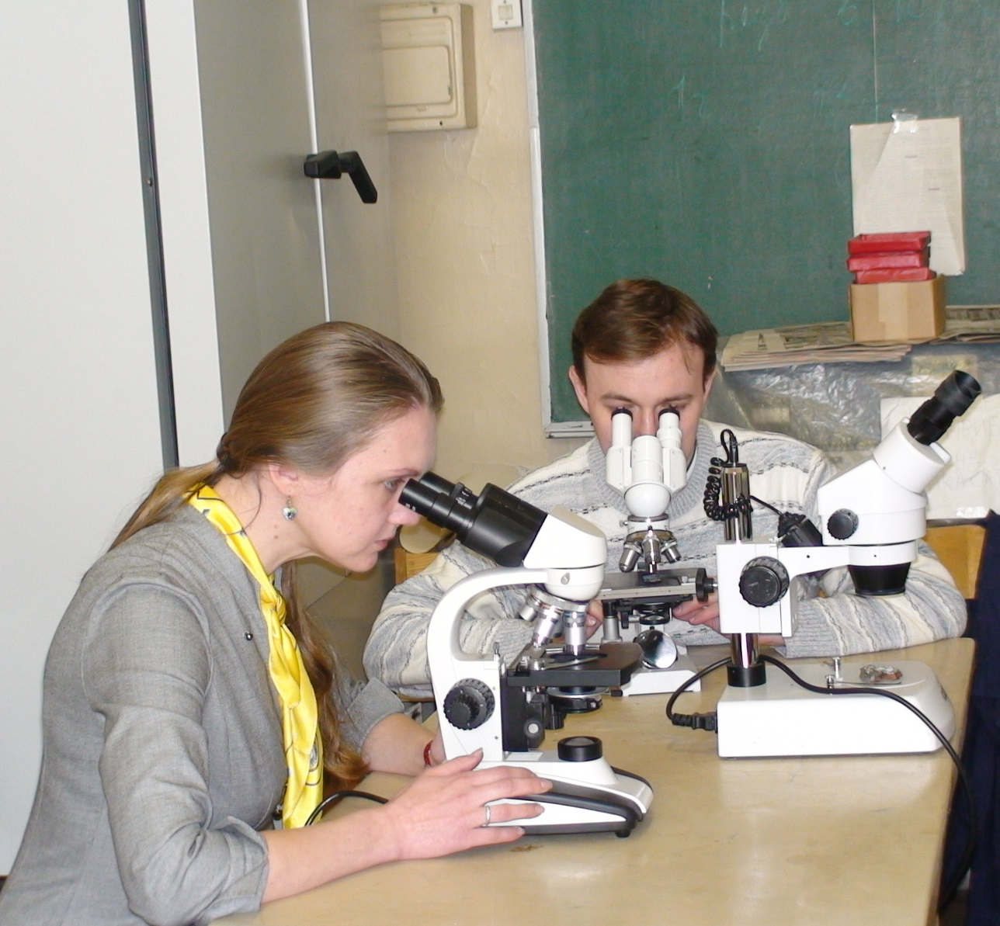

Кто такие экологи

Экологи пытаются понять, как взаимодействуют живые организмы с компонентами окружающей среды и объяснить, почему изменяются леса и высыхают реки, как изменение климата влияет на биоту и как функционируют экосистемы. Они изучают состояние организмов, почвы, воды, воздуха, а также степень воздействия промышленности на биосферу, людей, растения, животных. Экологи выявляют и анализируют причины нарушений, разрабатывают механизмы снижения воздействия антропогенных факторов на окружающую среду и составляют прогноз ситуации в будущем. Они занимаются восстановлением и охраной природных экосистем, почвы и растительного покрова.